前言
程序下载地址：https://pan.baidu.com/s/1pI4rPXI3Fu_AGkea-0VqBQ
版本：V5.1.18030300
简介：iWebShop基于iweb SI框架开发，在获得iweb SI技术平台库支持的条件下，iWebShop可以轻松满足用户量级百万至千万级的大型电子商务网站的性能要求。
程序安装到复现
1.第一步安装系统
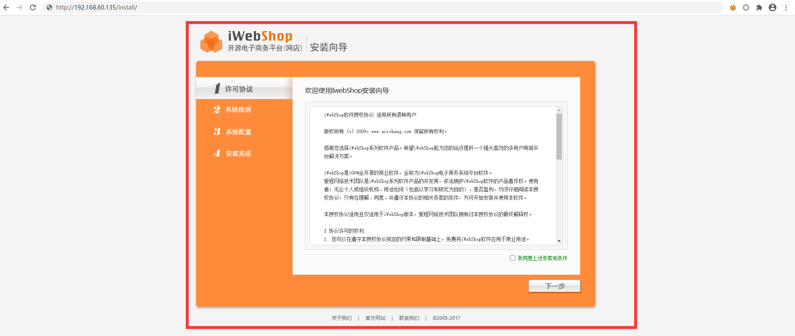
2.第二步安装结束选择前台
3.第四步到注册页面
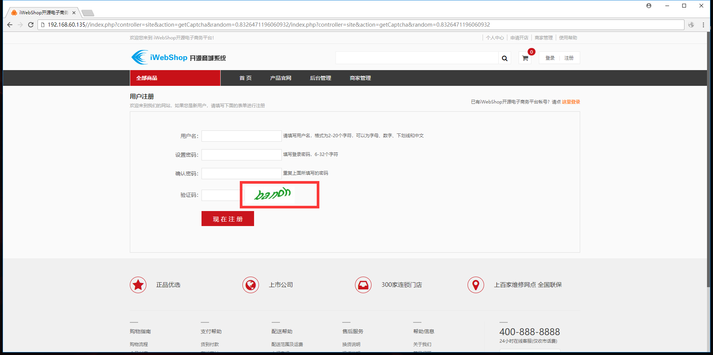
4.F12查看地址，然后提取URL地址
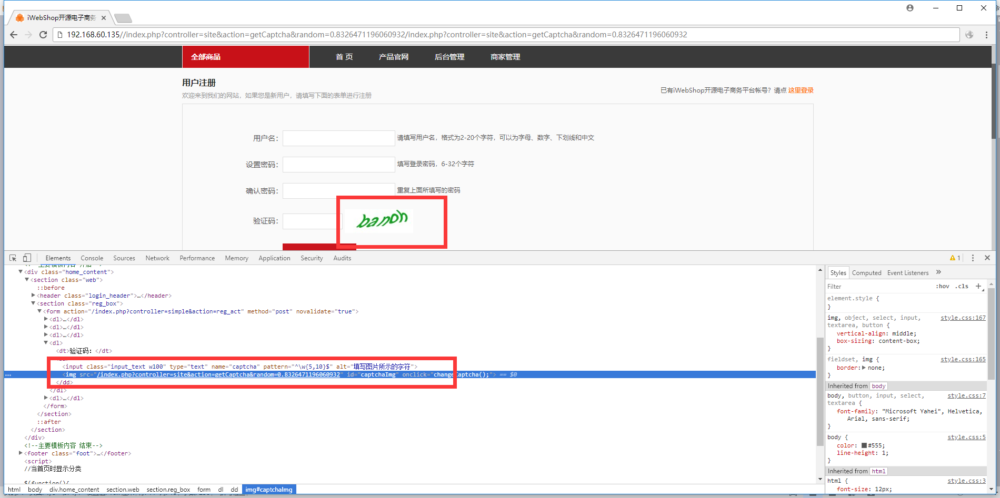
5.在URL加上w=100&h=100发现这里可以控制的
URL：http://192.168.60.135/index.php?controller=simple&action=getCaptcha&w=100&h=100
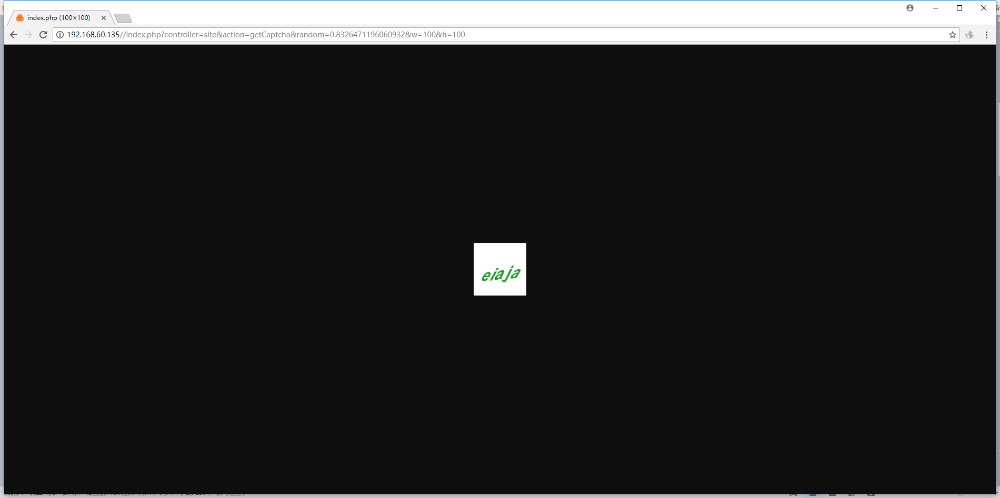
代码审计
漏洞所在文件：\lib\web\controller\controller_class.php(在图像验证码)
漏洞文件代码：(只贴上相关代码)
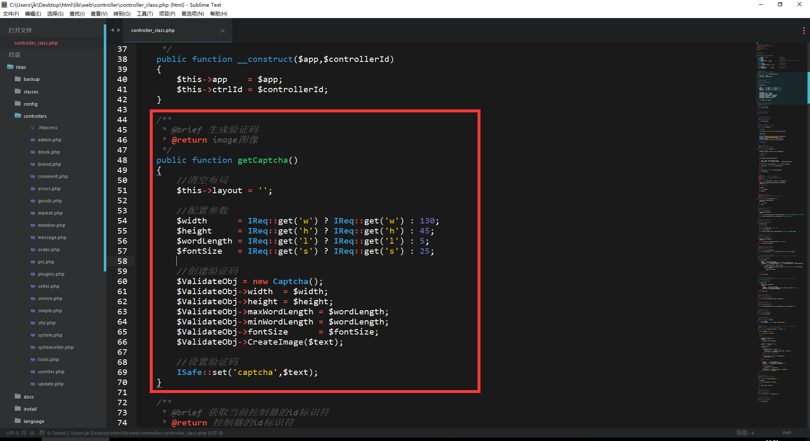
首先我们看第51行，$this->layout = '';清空布局，然后我们在看第54-57行这里代表取get参数，3元运算符，这里就不解释了，我们在看看第60行。$ValidateObj = new Captcha();，我们看看这个函数在哪里。
路径：\lib\core\util\captcha_class.php
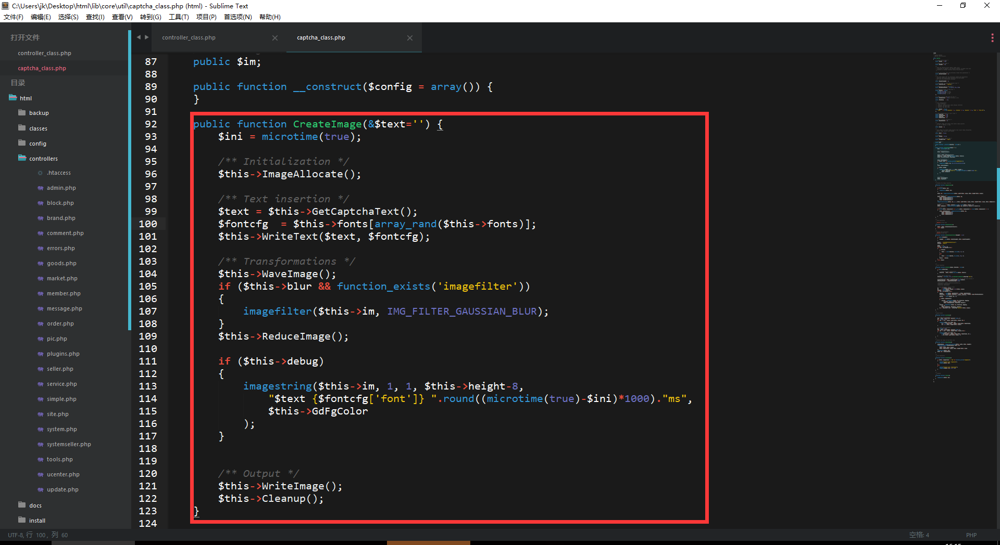
我们看看第93行$ini = microtime(true);，获取毫秒时间戳，在看看第96行$this->ImageAllocate();，这里调用当前方法。
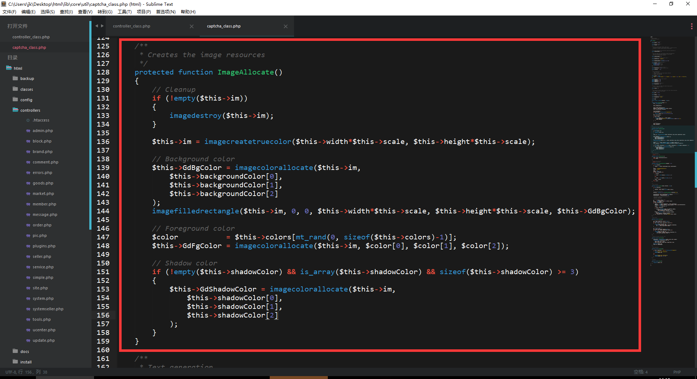
第131行判断if (!empty($this->im))，如果判断$this->im不为空，imagedestroy($this->im);那么就销毁图像，第136行，imagecreatetruecolor，创建真彩图像资源，第139行，imagecolorallocate，给图像分配颜色，第144行，imagefilledrectangle，画一矩形并填充，那么现在已知道它这里是创建个图层。
那么我们回到第二张图片，第99行，$text = $this->GetCaptchaText();，这里又走进这个方法，看下表面的意思大概是在图层写上文字。
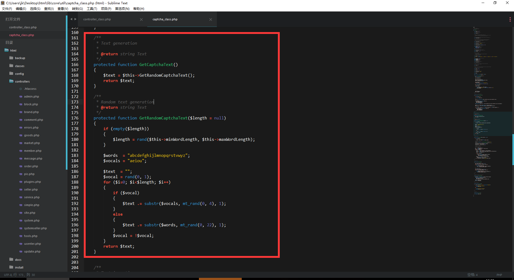
我们看第168行$text = $this->GetRandomCaptchaText();，在第176行，我们看看第178行判断if (empty($length))长度是否为空，如果为空那么进入第180区间，随机取长度，这里只是产生随机数，我们在回到图二。
第101行，$this->WriteText($text, $fontcfg);，这里好像是给图像染上文字。
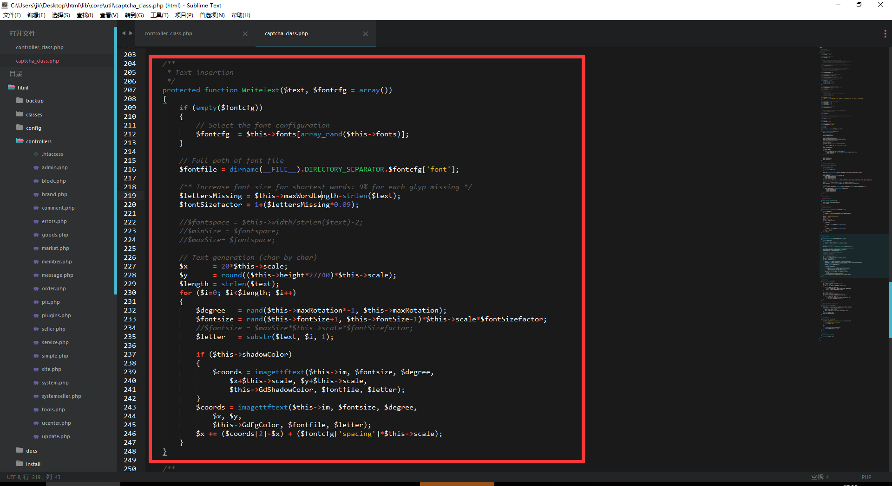
这里看到判断if (empty($fontcfg))，是否为空如果不为空那么则不走进此区间。我们在看看第216行，$fontfile = dirname(__FILE__).DIRECTORY_SEPARATOR.$fontcfg['font'];，获取当前字体路径。
第219行到220行$lettersMissing = $this->maxWordLength-strlen($text);，字体长度，$fontSizefactor = 1+($lettersMissing*0.09);，字体大小，第227行到229行，$x = 20*$this->scale;，代表图像的x轴，$y = round(($this->height*27/40)*$this->scale);，代表图像的y轴，$length = strlen($text);，统计字体长度。for ($i=0; $i<$length; $i++)，for循环，第232行到第234行，rand取随机数，第235行，substr字符串切割。imagettftext，输出字符串到图层。回到第二张图片。
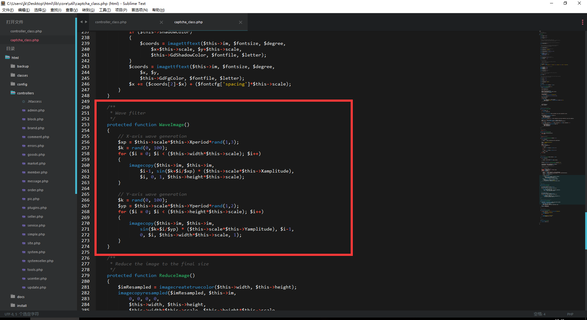
在的256行，$xp = $this->scale*$this->Xperiod*rand(1,3);，生成x轴，第260行，imagecopy，拷贝图像，第267行类似，生成y轴，拷贝图像，这里代表过滤图像，回到第二张图片。
第105行if ($this->blur && function_exists('imagefilter'))，判断$this->blur并且判断function_exists('imagefilter')，是否有这个方法，如果没有进入第107行，imagefilter($this->im, IMG_FILTER_GAUSSIAN_BLUR);，对图像使用过滤器，第109行$this->ReduceImage();。
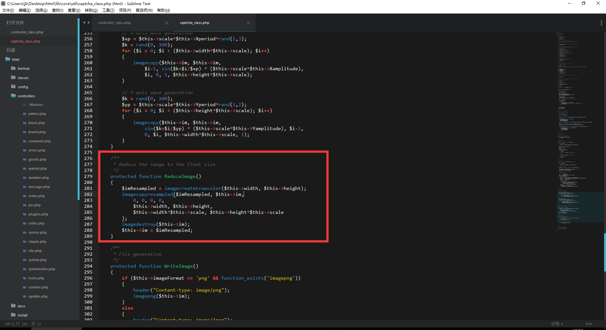
第281行，$imResampled = imagecreatetruecolor($this->width, $this->height);，创建真彩图像资源，imagecopyresampled，图像处理，imagedestroy，销毁图像，回到第二张图片。
第113行，imagestring，设置字体大小。
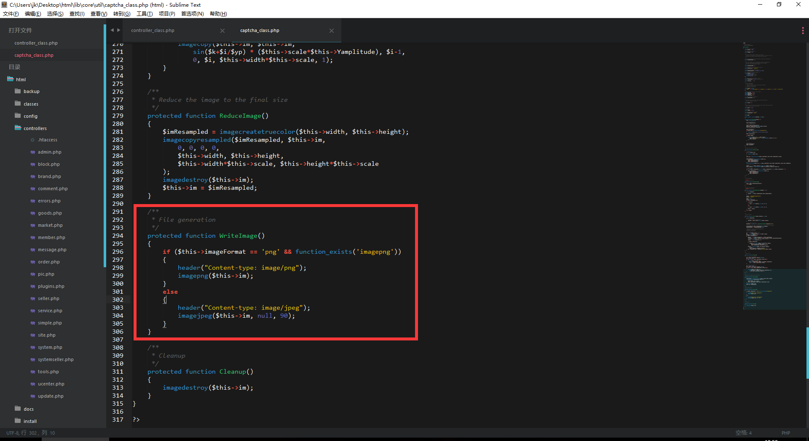
第296行，if ($this->imageFormat == 'png' && function_exists('imagepng'))，判断默认设置是不是png图像，并且判断function_exists('imagepng')，imagepng以png格式将图像输出到浏览器，'imagejpeg'以jpeg格式将图像输出到浏览器，然后我们在看看第311行，销毁imagedestroy。